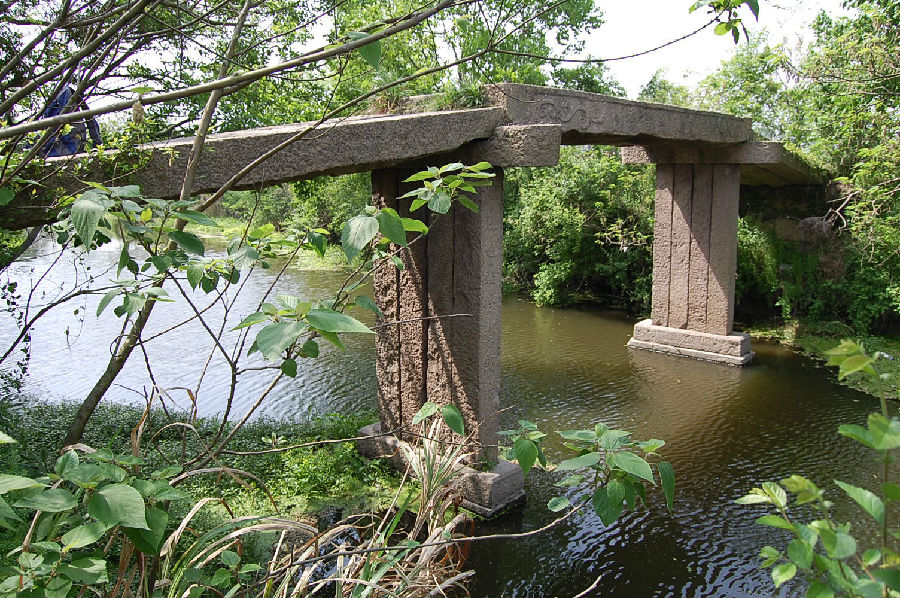

嘉兴市文物保护网 · 市级文物保护点 · 2020-11-09 · 原文

东兴隆桥位于大桥镇倪家浜村，当地俗称老娘桥，从桥额处刻字可知，建于清道光二年。南北向跨钟埭塘，系三孔无栏梁式石板桥，桥两侧由三块石板平铺而成，中间石板为两侧条石契口和中间小石板平铺，共四个天盘石，桥墩与底座和天盘石为榫卯结构。桥南、北两侧各有4级和3级台阶，两侧桥额均为“重建东兴隆桥”，并有“道光二年”字样，有卷草纹，西侧楹联为“涉利人皆安布乐”，其余的看不清楚。桥现已极少通行。东兴隆桥为榫卯结构，形制特别，在嘉兴地区非常少见，造型稳重，保存较好，对研究古桥梁的建造提供了实例，有很高的历史文物价值和科学、艺术价值。2009年公布为市级文保点。